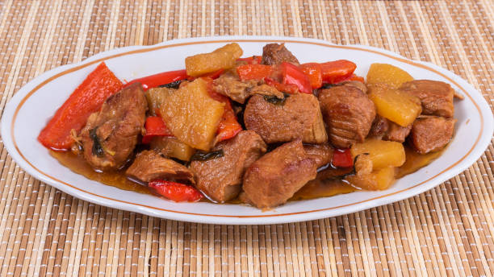

Pork Adobo Recipe

Description
Pork Adobo is one of the most popular and iconic dishes in Filipino cuisine. It is a savory, slightly tangy dish that combines pork, soy sauce, vinegar, garlic, and bay leaves. The long simmering process makes the pork tender and flavorful, while the reduced sauce creates a rich and delicious gravy perfect for serving over rice.
This classic dish is simple to make and relies on basic pantry ingredients. It's a comforting meal that you can enjoy on a regular basis, and it’s perfect for sharing with family and friends!
Ingredients
- 1 kg pork belly, cut into cubes
- 1/2 cup soy sauce
- 1/3 cup vinegar
- 4 cloves garlic, minced
- 2 bay leaves
- 1/2 teaspoon black peppercorns
- 1 tablespoon sugar (optional)
- 1 cup water
- 2 tablespoons cooking oil
Steps
- Marinate the pork in soy sauce, minced garlic, and black peppercorns for at least 30 minutes.
- Heat the oil in a pan over medium heat, then sear the marinated pork until browned on all sides.
- Pour the marinade into the pan along with bay leaves and water. Bring to a boil.
- Add vinegar and simmer for 30-40 minutes, or until the pork is tender and the sauce has thickened.
- Adjust the seasoning by adding sugar or salt as needed. Let the sauce reduce to your desired consistency.
- Remove from heat and serve the pork adobo with steamed rice. Enjoy!